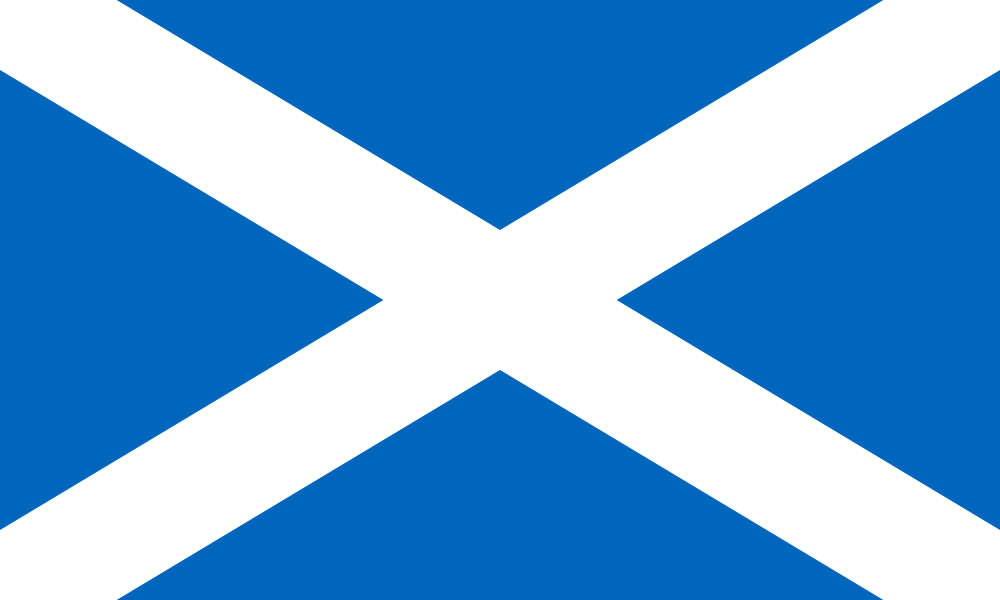

Hver margir Skotar vilja sjálfstæði?
Eftir mörghundruð ár af endalausu, óhamingjusömu sambandi við England hefur Skotland þurft að ganga í gegnum margt. Frá endalausu virðingarleysi frá Englendingunum sem þeir áttu að kalla "vini" sína til ríkisstjórnar sem ræður yfir þeim út úr höfuðborg hinum megin í landinu. Það er óhætt að segja að skotar eru fullsaddir af virðingarleysi og óumbeðnum yfirráðum Englendinga og sumum finnst að það sé loks kominn tími á sjálfstæði á ný. Nýlega hafa kosningakannanir um sjálfstæði skotlands sýnt fram á það að yfir 50% þeirra skota sem tóku þátt myndu velja sjálfstæði yfir að halda saman konungsríkinu. Þetta er um 5% - 10% hærra en kannaninar frá 2014 fyrir þær kosningar sem enduðu með þeim niðurstöðum að skotar myndu halda sig inn í konungsríkinu.
Vandamál vegna Brexit.
Eftir að kosið var að Bretland myndi hætta aðild í Evrópusambandinu þá hafa skotar enn meiri ástæðu fyrir að hætta sinni aðild að Bretlandi þar sem að nákvæmlega 62% skota kusu að halda áfram aðild sinni að Evrópusambandinu. Mörgum skotum finnst þetta vera eitt besta dæmið fyrir að gerast sjálfstætt ríki, ekki endilega vegna þess að þeir eru hlynntir Evrópusambandinu heldur frekar vegna þess að þetta sýnir bara hvernig þeim er stjórnað á móti vilja þeirra án þess að hagbúnaður þeirra sjálfra sé tekinn inn í reikninginn.
Vegna þessara ástæða sem voru undirstrikuð að ofan þá er prósenta þeirra skota sem vill sjálfstæði frá Bretlandi að hækka daglega. Hægt er að þakka Skoska Þjóðarflokkinum, SNP, að hluta til fyrir hækkunina vegna mikils mynd- og hljóðefnis sem flokkurinn hefur framleitt til að reyna að æsa upp þjóðina. Hvort þetta er góður eða vondur hlutur er erfitt að segja um en það er ekki hægt að neita því að það er frekar ótrúlegt það sem þeir hafa náð að gera.
"A choice of two futures: Scotland's future in Scotland's hands", eftir SNP, kosningarauglýsing frá 2014.